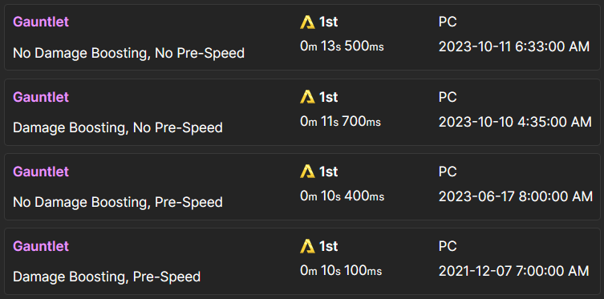
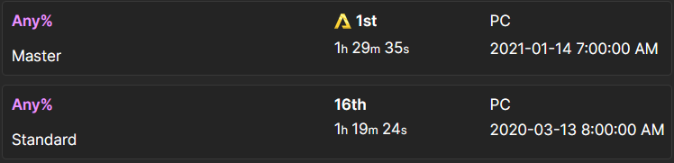
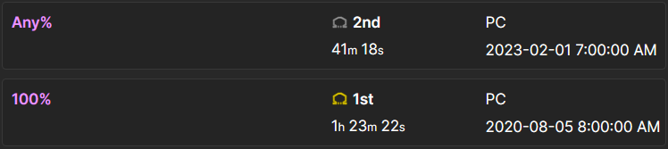

")

My Virtual Trophy Cabinet
I've been speedrunning on and off for 6 years now, and in that time, I've done plenty of things I think are worth showing off! This page will feature a lot of my current best times and runs (as of roughly April 2024). A great place to see all of my runs and times for yourself is my Youtube channel and my speedrun.com page. But all of the interesting ones will be here.
This page will just be a long, dragged on flex of what I've done, and partly what others have done, (and probably getting off track and explaining a bunch of other stuff to make it make sense). If you don't want to read a page that's full of me being full of myself, and rambling about geek stuff then... Nevermind this page; why are you even on this website?
Starting off with the best known of my endeavors: my Titanfall 2 Gauntlet times. I played the gauntlet in Titanfall 2's pre-alpha tech test in August 2016 and thought to myself "there's gonna be some lunatic that pushes this to crazy extents" and I had no idea that the lunatic would be me!!!
Warning: there is shooting and explosions in this one, but the things being shot are
just holograms.
The most "graphic" thing displayed is some POV color shifting and some hexagon effects on the screen.
Every time I post a new best time for the gauntlet, I am never less appreciative of the positive community response. Not only from the speedrunners, but from the entire Titanfall 2 playerbase. I've inadvertently become somewhat of a name in the game's community (for better or worse) just by doing gauntlet speedruns. Players will occasionally recognize me in Titanfall 2 multiplayer as "the gauntlet guy". I've never gotten used to it. It does bring a smile to my face.
Aside from the overall gauntlet world record with no restrictions, there's also 3 other leaderboards that I have the record for. There's the no damage boosting leaderboard, the no pre-speed leaderboard, and the no damage boosting/no pre-speed leaderboard. I didn't run the NPS categories for a few years but recently came back to sweep the categories.
I also ran the Titanfall 2 campaign, and had the world record for a short time. Though, I only got the record because I developed a faster strategy for the final boss fight, and I was the first to use it in a good enough run. When other runners–specifically, Bryonato, who had the world record uncontested for years before I took it–got the hang of the new strats, my time was swiftly surpassed.
Even while I didn't have the record, I did a decent job keeping myself high on the leaderboards and improving my time. If it weren't for the drastic shift in my mindset around the keyboard exclusive development era, I'd probably still dabble. But I've basically retired from Titanfall 2 Any% runs. My 1:19:24 from March 2020, which was once the world record, is now in 16th place, FIVE whole minutes behind the current record of 1:14:19 by Blaidan. I'm very impressed by what new-wave runners have accomplished with the speedrun.
As well as full game Any%, I also did a lot of Titanfall 2 IL speedruns. Because I started out on Xbox, and could only record for 10 minutes or less, individual levels were the only thing besides gauntlet that I could really do for the first couple years. I did a TON of IL grinding in that time, and the experience carried over into my later runs of the game.
I once got world records in all of the following ILs:
- Blood and Rust
- Effect and Cause 2
- Effect and Cause 3
- The Beacon 2
- The Beacon 3
- The Ark
- The Fold Weapon
(Not all held at the same time, just each one at some point in time.)
The Beacon 2 was the most competitive IL WR in my time running, with Bryonato and I going back and forth for about a year in 2019/2020. We also traded the Blood and Rust WR a few times in the span of 2020-2021. And Zweek and I had a battle for the Effect and Cause 3 WR in October 2020.
Final funny little mention (pictured earlier) is that I still have the world record for Any% on Master difficulty. No one runs it because it's basically just the standard Any% speedrun except artificially slower, and you're way more liable to get unlucky. My 1st place time is a neat relic of the period that I speedran the game.
Moving onto my other main game, FC3: Blood Dragon: Back when I first started running in July 2020, it took me about a week to get Any% WR for the game. (FC3:BD was never the most popular speedgame, and also I'm a tryhard, so it's not as impressive as it might sound.) I lowered it about a minute by myself, until another runner Zaiydo picked up the game and took the record from me in September 2021. I took the record back the same month, and held it until August 2022 when Zaiydo took it back, and improved the record FOUR other times in the same month. (He's nuts.)
The current Any% record is 41:03 by Zaiydo. I tried to take it back over a year ago but never really had the drive to. I still think that someday, I'll go back to reclaim the record, but now that I'm acquiring a higher education, it might be even longer before I see the free time to do so.
Primarily, I'm just proud of me and Zaiydo both for pushing the game so far after it remained almost stagnant for so many years. Having him to compete with made running the game way more inspiring. Big thanks to everyone in the FC3:BD community who made it so fun!